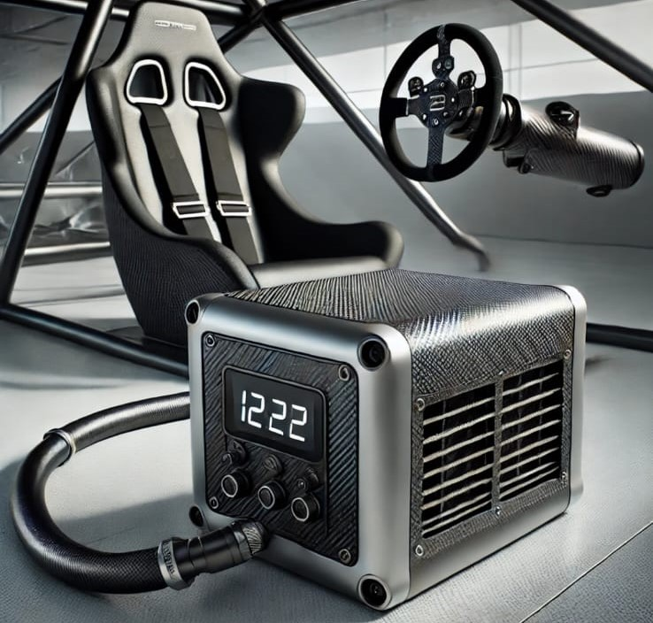
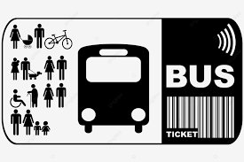

Kabin Soğutma Sistemi: Araba Yarışlarında, yarışçıların kabinleri çok sıkcak oluyor. Projemiz bu soruna çözüm üretiyor. Üretmiş olduğumuz soğutucu sistem, bulunduğu arabanın gücünden ve hızından düşmeden, yarış pilotunun hissettiği sıcaklığı büyük ölçüde azaltıyor.
Otobüs Takip Uygulaması: Şehirlerarası otobüs yolculuklarında,
yolcuların kullanması için tasarlanmıştır. Uygulama kapsamında yolcular, yolculuk
sürelerini, kaç kilometre hızla gidildiğini, ne kadar yol kaldığını, sıradaki dinlenme
tesisine kalan yolu, şoförun kaç saattir araba kullandığını, wifi şifresini gibi yolculuk
esnasında gerekli olan bütün bilgileri buradan öğrenebilecekler. Uygulamaya bilet
alındıktan sonra, telefona gelen kodla giriş yapılıyor.

KendiPhone: Günümüzde hepimizin elinde olan telefonlar, markanın kendi tasarladıkları
şekilde satışa sunuluyor. Ancak binlerce lira verilerek alınan telefonların kendi zevkimizi
yansıtmaları gerektiğine inanarak KendiPhone'u kurdum. KendiPhone, telefon alacak müşterisine
kendi telefonunu tasarlama şansı veriyor. Müşteri KendiPhone sitesinden kategorize edilmiş özellikleri
seçiyor. Seçtiği özellikler ışığında telefonu sipariş ettiği şekilde hazırlanıp kendisine gönderiliyor.